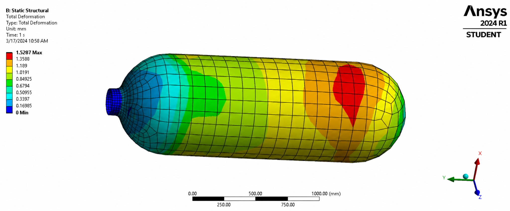
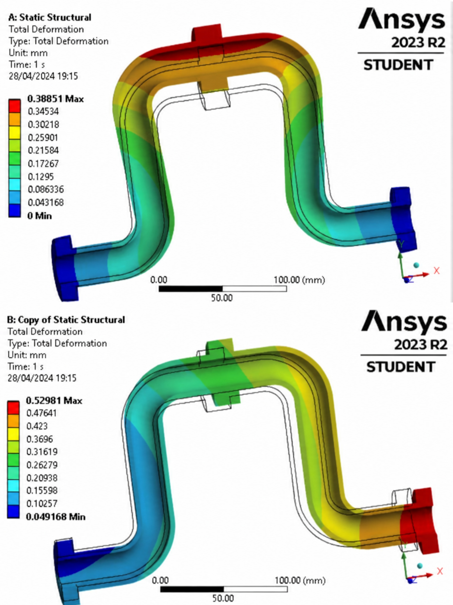
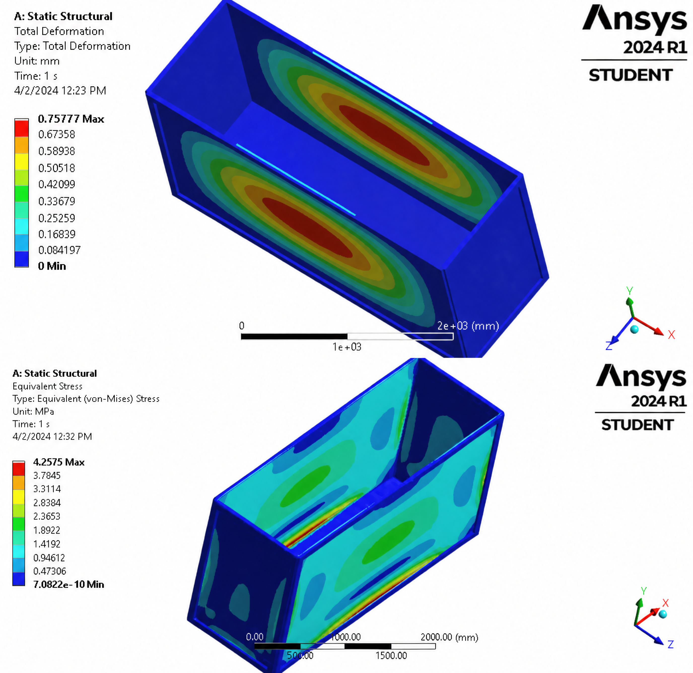

Finite Element Analysis (FEA) Projects
Structural & Thermal Simulations (Independent Study Program Batch 6)
Completed a 900-hour intensive Engineering Simulation program by PT CADFEM Simulation Technology Indonesia. Demonstrated strong technical proficiency in defining precise boundary conditions, evaluating failure criteria, and modeling both linear and non-linear material behaviors using Ansys software.

Composite Pressure Vessel Analysis
Conducted structural integrity analysis on a composite pressure vessel subjected to 1 MPa internal pressure. Evaluated critical failure metrics by calculating the Inverse Reserve Factor (IRF) based on maximum strain and Von-Mises stress criteria, successfully validating the safety of the composite layup design.
Structural Analysis
Thermal Expansion in Piping Systems
Investigated thermal stress generation and physical expansion in an aluminum alloy pipe exposed to a 100°C thermal load. Critically analyzed the effects of overconstraint by comparing rigid fixed supports against coupled directional displacements, ensuring accurate prediction of thermal strain. Achieved a score of 92.5/100 for Thermal Strain Analysis.
Thermal-Structural Coupling
Hydrostatic Stress Evaluation
Simulated real-world hydrostatic pressure distribution across large-scale aquarium walls. Identified critical high-stress regions by mapping Von-Mises equivalent stress against material yield limits, and pinpointed maximum deformation zones at the center of the largest structural panels.
Hydrostatic LoadingSolid Mechanics & Computational Theory
All simulations are firmly grounded in continuum mechanics principles. This includes a comprehensive understanding of 3D stress-strain tensors, ductile versus brittle fracture mechanisms, mesh optimization, and the transition from linear elasticity to non-linear deformation models.
View Full FEA Assignments & Reports
Access the consolidated document covering in-depth theoretical fundamentals, boundary condition configurations, and full simulation contour plots.